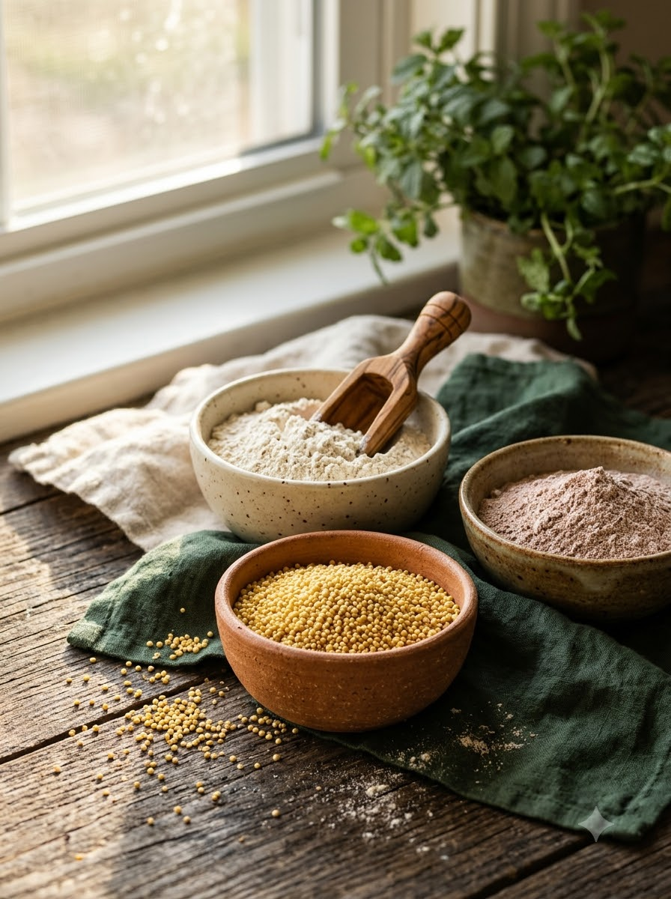
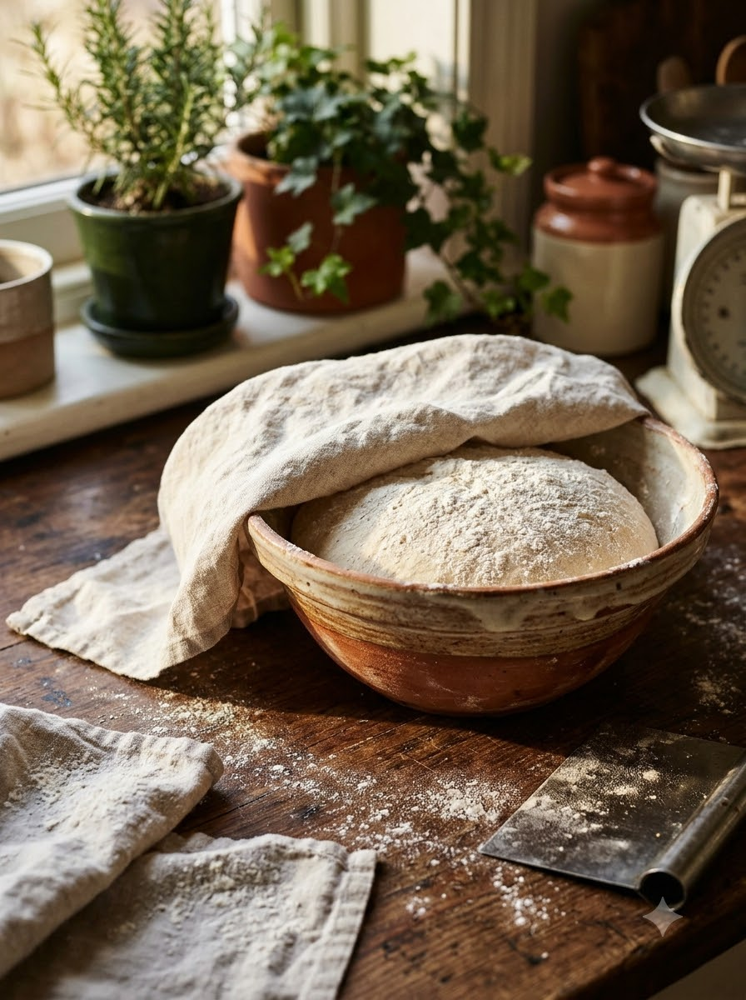
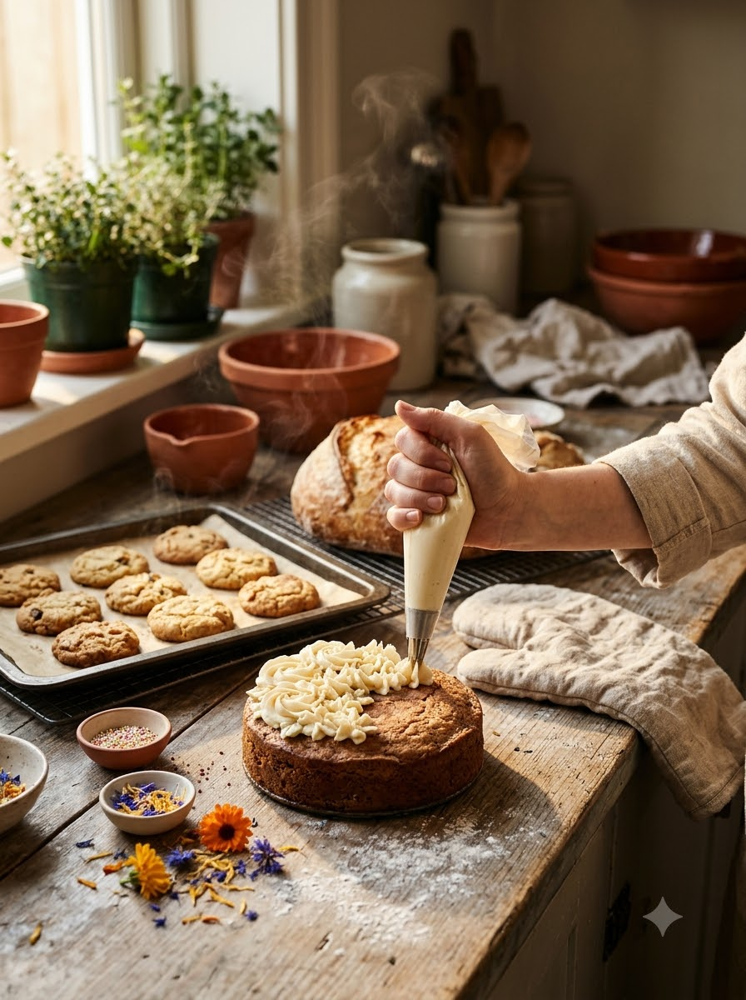
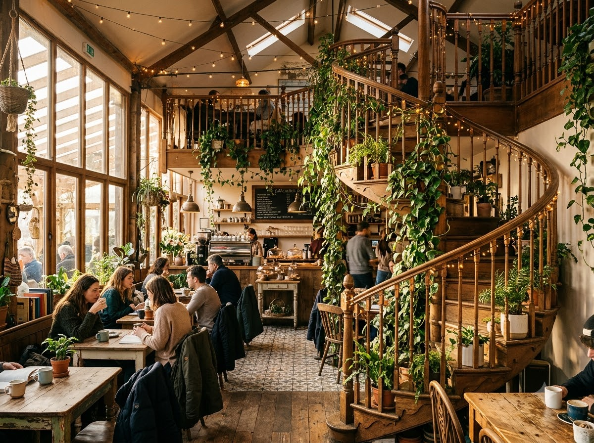

01The grain
Jowar, ragi and multigrain flours, chosen over maida wherever they make the bake better — that's where the millet range began.
A home kitchen in Prayagraj that grew, one honest bake at a time, into a garden café full of regulars.
The story
It started the way most good things do — in a home kitchen, with a whisk, a wish, and a stubborn love for doing things the slow, honest way. No shortcuts, no preservatives, no waste. Just butter, flour, fruit and patience.
Surabhi Shrivastava Sahai never set out to run a café. She set out to bake well — millets instead of maida where it makes sense, organic where it's possible, and nothing you can't pronounce. Word travelled the way it does in Prayagraj: one order for a birthday, then a dozen, then a waitlist.
We bake the slow way. Millets where they make sense, organic where we can, nothing you can't pronounce — and never a preservative. Small batches, tasted before they leave the kitchen. That's the wish.

01Jowar, ragi and multigrain flours, chosen over maida wherever they make the bake better — that's where the millet range began.

02Dough is given its time. Nothing rushed, nothing boosted, nothing added to make it last longer than it should.
 03
03Small batches, straight from the oven to the counter, so nothing waits on a shelf — and nothing goes to waste.

04Piped, petalled and tasted by hand before it leaves the kitchen — whether it's one slice or a birthday cake.
The kitchen got bigger and the tables moved into a garden — the rules didn't.
Baked to be eaten fresh, not to sit on a shelf.
Small batches, reusable glass bottles at the café, and nothing thrown away that can be used.
Posts of cakes, bakes and café moments on Instagram so far.
People following along from Prayagraj and beyond.
Today Shubhi's Bake A Wish is a little garden café tucked away in Prayagraj — climbing greens, hanging fairy lights, a staircase that photographs better than it has any right to — where every cake, cookie, bread and tart is still handbaked the way it was on day one.
Batches stay small on purpose: small enough that a custom order placed a day ahead gets the same care as a regular's weekend ritual.
